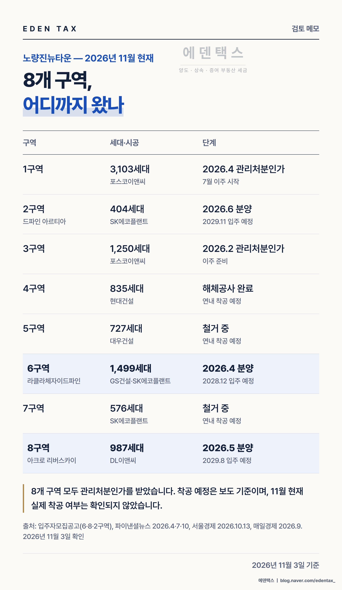
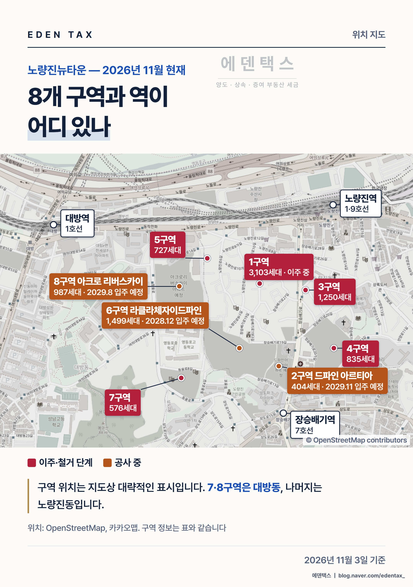

노량진뉴타운은 2026년 4월 1구역이 관리처분계획 인가를 받으면서 8개 구역이 모두 이 단계를 넘었습니다. 동작구는 2025년 10월 16일 다시 투기과열지구로 지정됐습니다. 투기과열지구 재개발 구역에서는 관리처분계획 인가 뒤에 산 사람이 원칙적으로 조합원이 될 수 없습니다(도시정비법 제39조 제2항). 그런데 노량진에서는 이 제한이 구역마다 다르게 적용됩니다. (2026년 11월 3일 기준)
구역별로 갈리는 조합원 지위
관리처분 인가 뒤 지위양도 제한은 2018년 1월 25일 이후 처음 사업시행인가를 신청한 구역부터 적용됩니다(법률 제14943호 부칙). 그래서 같은 뉴타운 안에서도 사업시행인가를 언제 신청했는지가 답을 가릅니다.
| 구역 | 세대·시공 | 사업시행인가 신청 | 지금 매수할 때 |
|---|---|---|---|
| 1구역 | 3,103세대 · 포스코이앤씨 | 2022.7.26 | 원칙적으로 조합원 불가 |
| 2구역 | 404세대 · SK에코플랜트 | 2014.5.2 | 제한 없음 |
| 3구역 | 1,250세대 · 포스코이앤씨 | 2019.6.17 | 원칙적으로 조합원 불가 |
| 4구역 | 835세대 · 현대건설 | 2017.12.22 | 제한 없음 |
| 5구역 | 727세대 · 대우건설 | 2020.8.20 | 원칙적으로 조합원 불가 |
| 6구역 | 1,499세대 · GS건설·SK에코플랜트 | 2014.5.2 | 제한 없음 |
| 7구역 | 576세대 · SK에코플랜트 | 2017.1.11 | 제한 없음 |
| 8구역 | 987세대 · DL이앤씨 | 2018.1.19 | 제한 없음 |
신청일은 서울시 정비사업 정보몽땅의 추진경과 기준입니다. 8구역은 기준일보다 엿새 앞서 신청해 제한을 받지 않습니다.
1·3·5구역이라도 파는 사람이 1세대 1주택자로 10년 이상 소유하고 5년 이상 거주했다면 예외가 됩니다. 어느 구역이든 계약 전에 매도인의 등기부와 주민등록 초본을 받아 보고, 조합에서 명의변경이 되는지 확인받아 두셔야 합니다.
구역별 지금 단계

1구역은 7월에 이주 개시 공고가 났고, 3구역은 2월에 관리처분계획 인가를 받아 이주를 준비하고 있습니다. 4구역은 9월 말 해체공사를 마쳤습니다. 5구역과 7구역은 철거가 진행 중입니다.
4·5·7구역은 연내 착공이 목표라고 보도됐지만, 11월 현재 실제 착공 여부는 확인되지 않았습니다. 4구역은 1+1 분양 조합원의 추가 주택 가격을 두고 조합 안에서 논의가 이어지고 있습니다.
당첨자가 기존 집을 팔아야 하는 날
기존 집 한 채가 있는 상태에서 분양권을 받았다면, 분양권 취득일부터 3년 안에 기존 집을 팔아야 일시적 2주택 비과세 특례를 검토할 수 있습니다(소득세법 시행령 제156조의3 제2항). 기존 집을 산 뒤 원칙적으로 1년이 지나 분양권을 취득했어야 하고, 기존 집이 자체 비과세 요건을 갖추고 있어야 합니다.
| 단지 | 당첨자 발표 | 3년이 되는 날 | 입주 예정 | 먼저 오는 것 |
|---|---|---|---|---|
| 6구역 라클라체자이드파인 | 2026.4.22 | 2029.4.22 | 2028년 12월 | 입주 |
| 8구역 아크로 리버스카이 | 2026.6.5 | 2029.6.5 | 2029년 8월 | 3년 기한 |
| 2구역 드파인 아르티아 | 2026.7.8 | 2029.7.8 | 2029년 11월 | 3년 기한 |
국세청의 기존 해석은 당첨일을 취득일로 봤고, 대법원은 2026년 3월 12일 판결(2024두54560)에서 분양계약일을 기준으로 판단했습니다. 위 표는 보수적으로 더 이른 당첨일을 기준으로 잡았습니다. 추가 모집 당첨자나 분양권 매수자는 본인의 취득일로 다시 계산해야 합니다.
8구역과 2구역처럼 3년 기한이 입주보다 먼저 와도 길이 막히지는 않습니다. 새 집 완공 후 3년 안에 세대 전원이 이사해 1년 이상 계속 살고, 기존 집을 완공 전이나 완공 후 3년 안에 팔면 다른 특례를 검토할 수 있습니다(같은 조 제3항). 이 특례는 6구역 당첨자에게도 열려 있습니다.
세 단지 모두 모집공고상 거주의무는 없습니다. 다만 새 집을 취득할 당시 동작구가 조정대상지역이라면, 새 집을 나중에 비과세로 팔려면 원칙적으로 2년을 살아야 합니다. 입주 때 전세를 놓을 계획이라면 그 뒤에 실제로 살 기간까지 넣어 매도 일정을 세우셔야 합니다.
현장에서 본 두 단지
정재욱 세무사에게 노량진은 10여 년 전 학원과 고시원 사이로 수험생이 북적이던 동네로 남아 있습니다. 2003년 뉴타운 지정 뒤 23년 동안 일반분양이 없던 곳에 타워크레인이 줄지어 선 모습을 보고 상전벽해라는 말을 떠올렸다고 합니다.
라클라체자이드파인은 1구역 빌라촌을 지나면 공사 펜스가 길게 이어지는 곳에 있습니다. 14개 동, 최고 28층으로 계획됐고 7호선 장승배기역이 가깝습니다. 2025년 6월 착공했고, 그 과정에서 시공사의 공사비 2,194억원 증액 요구가 서울시 코디네이터 중재로 1,976억원 증액으로 정리됐습니다. 1순위에서 180세대 모집에 4,843명이 접수해 평균 26.9 대 1을 기록했습니다.
아크로 리버스카이는 뉴타운 가장 서쪽, 주소로는 대방동입니다. 1호선 대방역과 노량진역 사이 중간쯤이라 완전한 역세권이라고 하기는 어렵습니다. 현장에서는 DL이앤씨 하이엔드 브랜드에 대한 기대가 역과의 거리에서 오는 아쉬움을 덜어 준다는 인상을 받았습니다. 140㎡ 미계약분 3가구는 10월에 다시 나왔습니다.

학원가가 빠져나가면서 지금 상권은 한풀 꺾여 있었습니다. 9호선으로 여의도와 강남, 1호선으로 시청·종각에 닿는 위치라 입주가 본격화되면 동네에 다시 활기가 돌 것이라는 것이 현장 의견입니다.
1년 거주와 2년 거주를 헷갈리지 마십시오
앞에 나온 '1년 계속 거주'는 기존 집을 비과세로 팔기 위한 요건이고, 이 '2년 거주'는 새 집 자체를 팔 때의 요건입니다. 두 가지는 따로 챙기셔야 합니다.
— 정재욱 세무사
에덴택스는 국세청 출신 세무사가 양도·상속·증여·취득까지 부동산 세금을 직접 봅니다. 분양계약서와 기존 주택 현황, 매수하려는 물건의 구역을 알려 주시면 처분 시점과 조합원 지위부터 함께 정리해 드립니다.
※ 2026년 11월 3일 기준입니다. 분양 조건과 일정은 각 단지 입주자모집공고(2026.4.3, 5.13, 6.19) 기준이고, 구역 진행 상황은 2026년 보도 기준이며 착공 예정은 목표라 달라질 수 있습니다. 사업시행인가 신청일은 서울시 정비사업 정보몽땅 추진경과 기준입니다. 지도 위치는 대략적인 표시입니다. 단지에 대한 인상은 현장을 둘러본 개인 의견이며, 특정 단지의 매수를 권하거나 시세를 전망하는 글이 아닙니다.
※ 본 글은 세무·부동산 분석을 위한 참고자료로, 개별 세무상담이나 신고 검토를 대체하지 않으며 투자·청약을 권유하지 않습니다. 세금 신고 및 투자 결정 전 전문가의 검토를 받으시기 바라며, 이를 활용한 판단과 결과의 책임은 이용자에게 있습니다.